App Design · Chinese as a Foreign Language
TIC: A Next-Gen Typing App for Learning Chinese Characters
TIC is a typing-based mobile app that addresses the heavy cognitive load of Chinese character acquisition by making Sound-Form-Meaning a single integrated chunk — designed for heritage speakers and CFL learners who can speak Chinese but struggle to read and type it.
Design Motivation
A student who could speak Chinese fluently — but couldn't stay in class
In 2018, while teaching Chinese at Indiana University's Department of East Asian Language and Culture, I encountered a student whose situation exposed a fundamental gap in how Chinese is taught. Andy Zheng — a 22-year-old American-born Chinese from a Fujian-speaking family — was placed in a first-year Chinese class based on his ACTFL placement test scores. His reading and writing were novice level. But his speaking and listening were advanced.
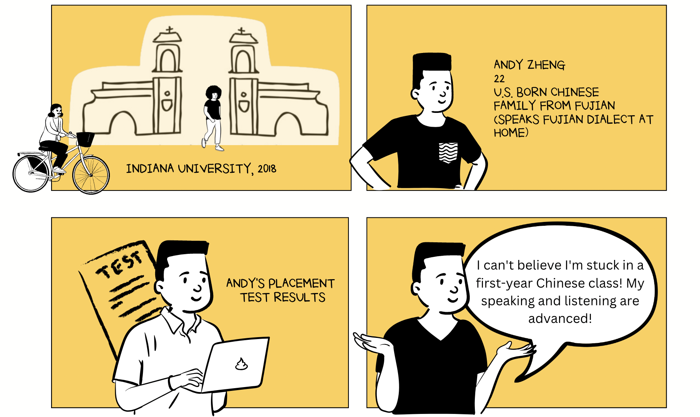
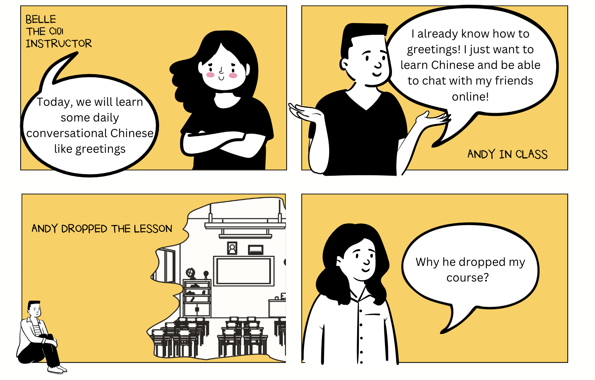
Andy's situation wasn't unique. Many American-born Chinese and heritage speakers are strong in spoken Chinese but weak in character recognition. They're interested in efficient Chinese typing — if a suitable learning approach exists. It didn't. So I built one.
Problem
Chinese characters carry a uniquely heavy cognitive load
Unlike alphabetic writing systems, Chinese characters require learners to simultaneously acquire and retain three distinct dimensions: phonology (how it sounds), orthography (what it looks like — often involving 8+ strokes with named types), and semantics (what it means). Traditional instruction treats these as separate tasks, creating a retrieval burden that causes many learners — especially heritage speakers who already have phonology — to stall at the character level.
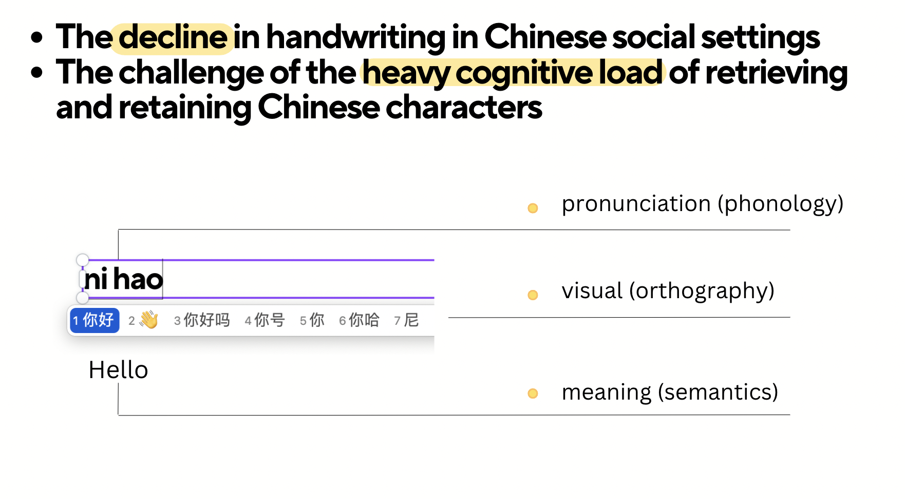
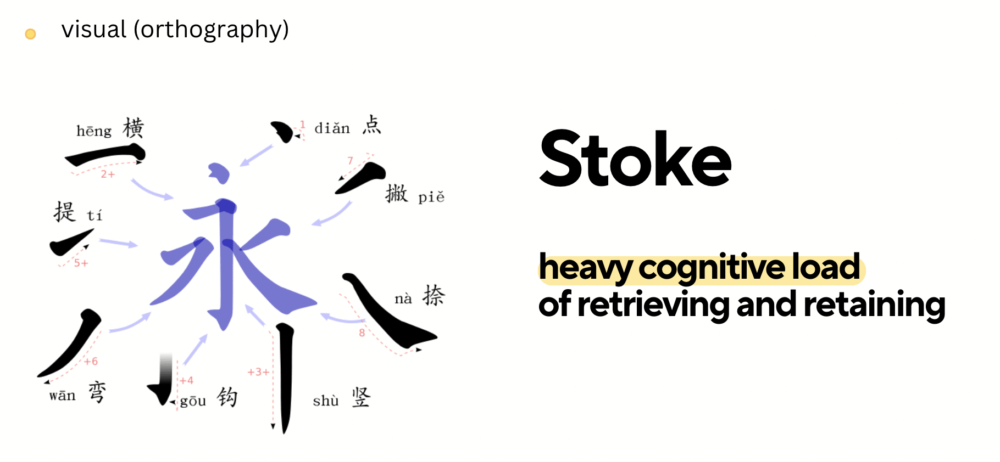
Research Foundation
Typing-based learning has strong evidence — but no dedicated tool
The research case for typing-based Chinese instruction is robust, but had never been translated into a purpose-built learning application. Three strands of evidence converged to justify the TIC design:
Lexical processing in L1 contexts
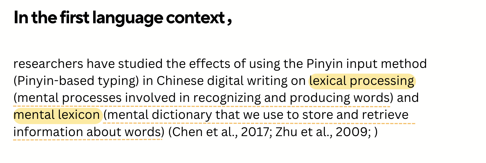
Studies show Pinyin input method use is positively associated with lexical processing — the mental processes involved in recognizing and producing words — and supports the mental lexicon (Chen et al., 2017; Zhu et al., 2009).
Semantic-phonology linkage
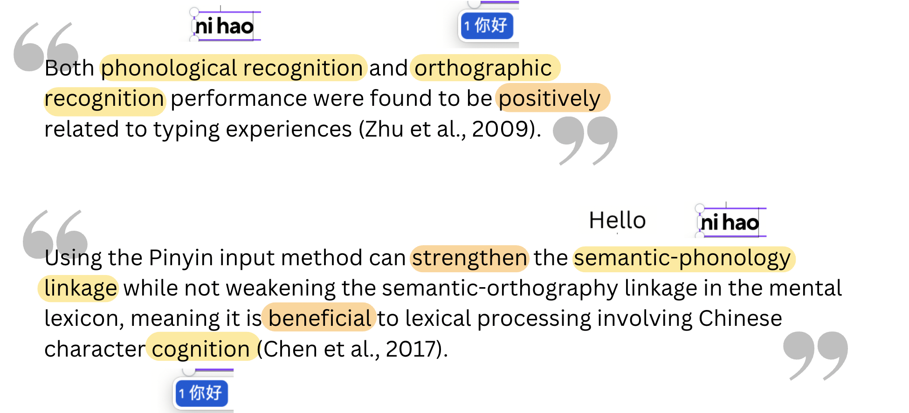
Both phonological recognition and orthographic recognition performance were positively related to typing experience. Pinyin input strengthens the semantic-phonology linkage without weakening the semantic-orthography linkage — beneficial for lexical cognition (Zhu et al., 2009; Chen et al., 2017).
CFL learner context
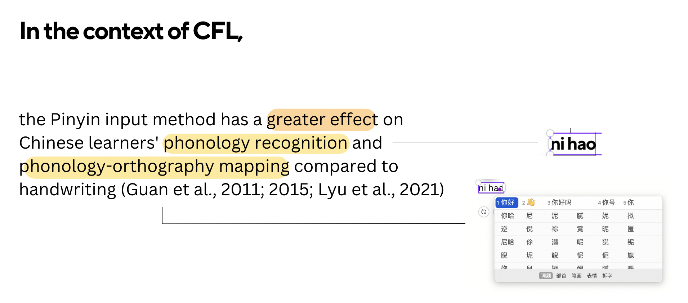
In CFL (Chinese as a Foreign Language) contexts specifically, Pinyin input has a greater effect on phonology recognition and phonology-orthography mapping compared to handwriting (Guan et al., 2011; 2015; Lyu et al., 2021).
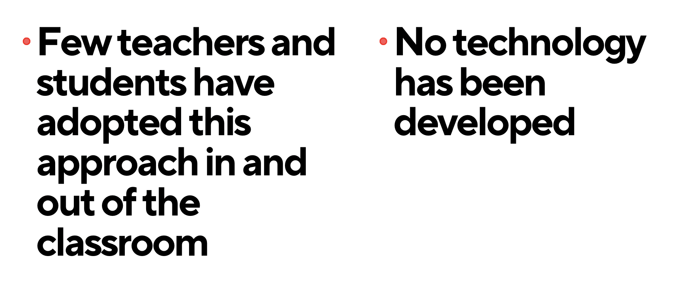
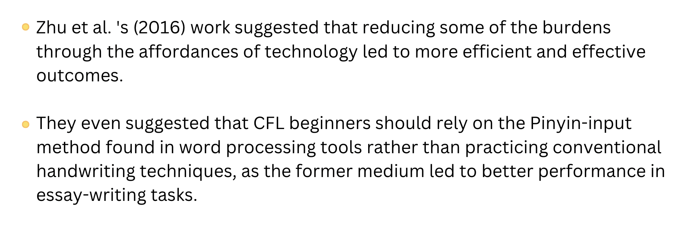
Design Approach
Design-based research: iterative, theory-grounded, field-tested
TIC was developed using design-based research (DBR) — a methodology that integrates analysis, design, development, and evaluation in iterative cycles, keeping the design grounded in authentic learning contexts and user feedback throughout. Research participants included CSL learners, Chinese native speakers, and CFL teachers, with methods including interviews, guided walkthroughs, and observation.
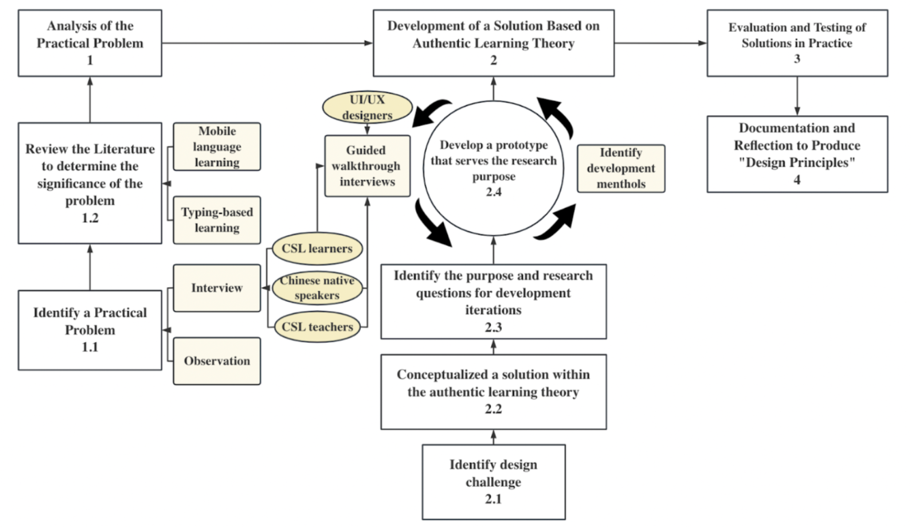
TIC's DBR framework: from identifying the practical problem through iterative prototype development with UI/UX designers, CSL learners, native speakers, and CFL teachers — to evaluation, documentation, and design principles.
How TIC Works
Sound-Form-Meaning as one integrated chunk
TIC's core learning mechanism is built around the Pinyin typing cycle — each new word is introduced in a real-context sentence with AI-assisted translation, then practiced through a spaced repetition sequence that progressively removes scaffolding as retention strengthens.
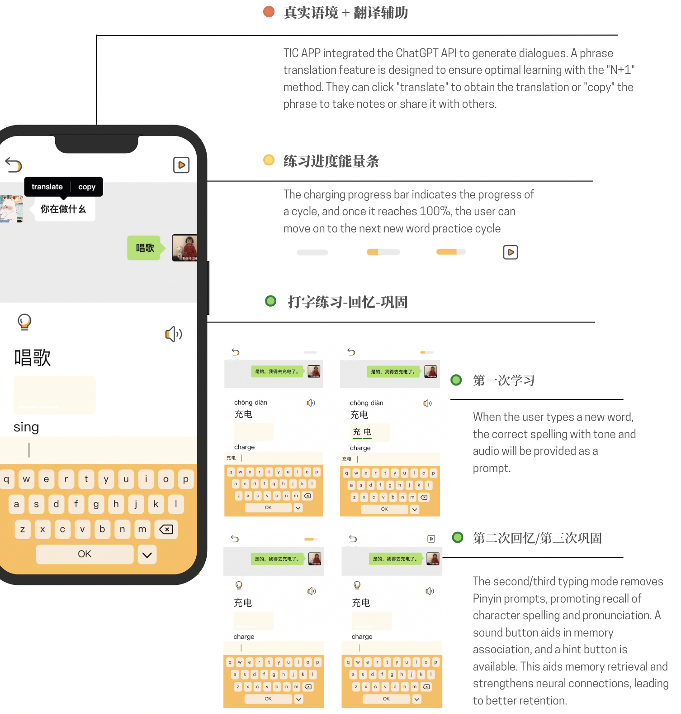
TIC's learning loop: real-context sentences with ChatGPT-powered translation → progress bar cycles → first typing (tone + spelling prompted) → second/third cycles remove prompts, activating active recall of character spelling and pronunciation.
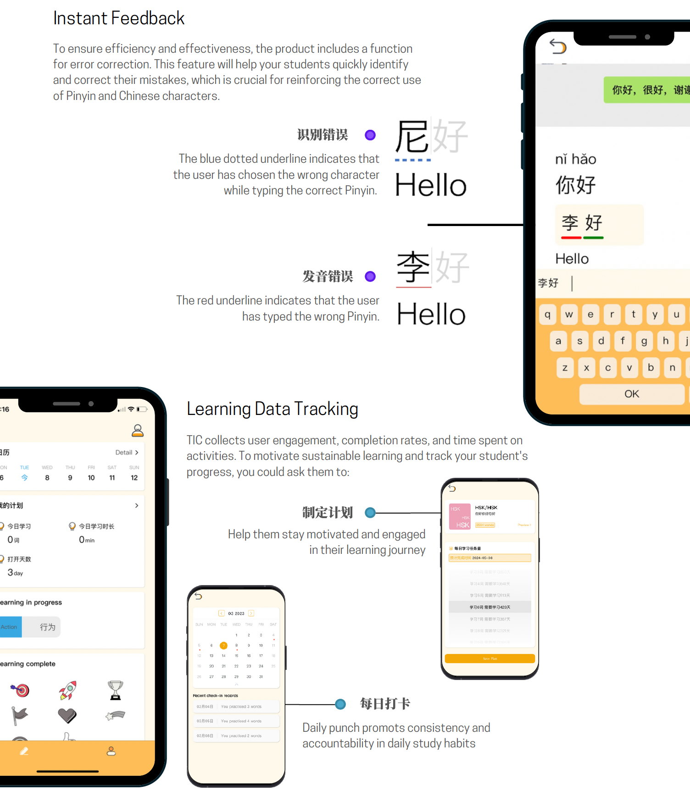
Instant feedback distinguishes between tone errors (blue dotted underline) and Pinyin errors (red underline). Learning data tracking monitors engagement, completion rates, and time spent — with daily punch-card and goal-setting features for self-regulated practice.
Key Features
Flexible, customizable, and curriculum-aligned
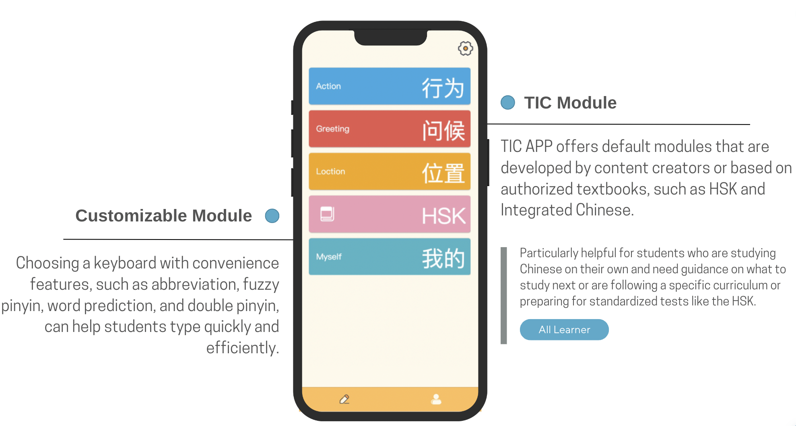
TIC Module offers default curriculum-aligned content (HSK, Integrated Chinese) for learners following standardized paths. Customizable Module supports fuzzy Pinyin, abbreviation input, and double Pinyin keyboard options — meeting learners where they are technically and linguistically.
Sound-Form-Meaning integration
Each typing action simultaneously activates phonology (Pinyin), orthography (character recognition from candidate list), and semantics (real-context sentence). The three dimensions become one retrievable chunk.
Real-context sentences + AI translation
Words are never learned in isolation. ChatGPT-generated sentences provide authentic usage context. The N+1 method ensures sentences are comprehensible but slightly beyond the learner's current level.
Spaced retrieval cycling
First exposure provides full scaffolding (tone + spelling prompts). Second and third cycles progressively withdraw support — activating active recall and strengthening long-term retention through retrieval practice.
Differentiated error feedback
Tone errors and Pinyin spelling errors are distinguished visually — helping learners understand exactly what went wrong and reinforcing accurate mental representations of each character.
Curriculum modules (HSK, Integrated Chinese)
Default modules cover HSK levels and Integrated Chinese textbook sequences — making TIC usable as a supplement to formal classroom instruction or standardized test preparation.
Learning analytics for teachers
Instructors can track student engagement, completion rates, and time-on-task. Goal-setting and daily punch-card features support accountability and sustainable study habits outside the classroom.
Download
Available on the Apple App Store
TIC is live and available for download. Search "TIC APP" in the App Store, or scan the QR code below.